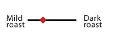

Brazil Moreninha Formosa

About This Product
Grown at a relatively high altitude for the Cerrado region, this unique plot harvests a more consistent cup than any other Brazilian farm.
Taste
Cupping notes- Sweet, smooth, dark chocolate, cherry essence with hints of orange. Who would love this coffee - We think of this as an afternoon coffee as it has the right amount of body without being heavy.
Harvest
Farm - Moreninha Formosa Process - Full natural dried on raised African beds Farmer notes - Slow dried to give the coffee a full body. Roaster's notes-berry and dark chocolate notes, leaves a creamy mouth feel with a sweet finish.

